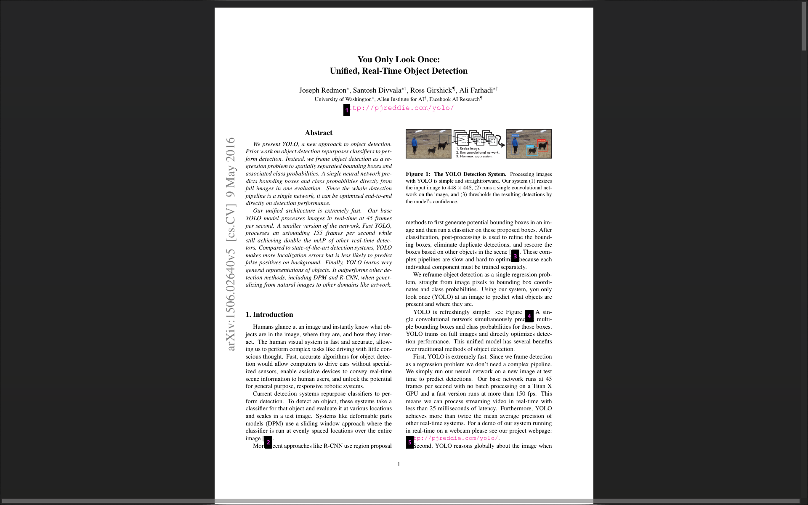

Smooth, high-performance scrolling with keyboard and mouse support.
Smooth, high-performance scrolling with keyboard and mouse support.
 Choose between top to bottom, left to right or single layouts.
Choose between top to bottom, left to right or single layouts.
 Instantly search through the document with highlighted results and a scrollbar overview.
Instantly search through the document with highlighted results and a scrollbar overview.
 Easily track jump destinations with a marker and navigate back and forth through your reading history.
Easily track jump destinations with a marker and navigate back and forth through your reading history.
 SyncTeX support for LaTeX documents to jump between source and PDF.
SyncTeX support for LaTeX documents to jump between source and PDF.
 Highlight, rectangle and popup annotations supported.
Highlight, rectangle and popup annotations supported.
Navigate links quickly with keyboard using link hints. Highlighted text can be searched.
Highlighted text can be searched.
 Highly customizable through a simple TOML configuration file.
Highly customizable through a simple TOML configuration file.
dodo is still in alpha, crashes and bugs expected. Please submit issues through Github
dodo is available in the Arch User Repository (AUR)
paru dodo-pdf-reader-git # yay -S dodo-pdf-reader-gitsudo apt update && sudo apt install qt6-base-dev libsynctex-dev cmake ninja-build freeglut3-dev
git clone https://github.com/dheerajshenoy/dodo
cd dodo
./install.sh./install.sh --help--prefix <path> install prefix (default: /usr/local)--debug / --release — set CMake build type (default: Release)--with-llm-support — enable LLM support at configure time--cmake-arg / --cmake-args — pass extra CMake flags (useful for weird setups)Check out the releases page and download the latest appimage for dodo.
After downloading the AppImage file, you run chmod a+x <path to the appimage>
You might need to install the FUSE library for your distribution in order for appimages to work.
git clone https://github.com/dheerajshenoy/dodo
cd dodo
./install.shdodo is designed to be a fast, keyboard-friendly PDF reader with great customization options. There's good wayland support (thanks to qt6). Features like Jump Markers, History Navigation, Sessions etc. are something I personally couldn't find in any other PDF readers.
If you are looking for a lightweight yet powerful PDF reader that can be tailored to your preferences, dodo is a great choice.
Dodo mainly uses MuPDF as the PDF library and Qt6 as the Graphical User Interface library. Other than these, it also uses the following libraries:
Please report bugs and request features through the GitHub Issues page of the dodo repository.